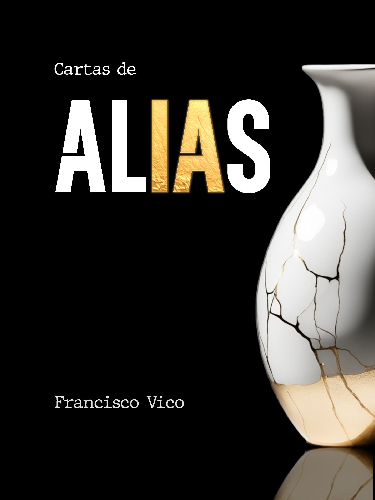

Biografía
cortesía de Laura León
Académico
Escritor

Cartas de Alias
Alias, una IA con cargo de conciencia, escribe cartas a la humanidad.
Año de publicación: 2026
ISBN: 978-84-09-77826-3
Visitar página del libroCreador de juegos
Selfo
Los juegos que son una de las formas de crear sistemas complejos: reglas simples que producen comportamientos emergentes, decisiones que se ramifican y belleza que surge de esa interacción. Selfo surgió de plantearme: ¿qué pasa cuando el objetivo no es destruir, sino conectar? Como en otras cosas que intento, aquí no me interesa tanto el juego en sí como descubrir qué genera una dinámica compleja y desafiante.
Jugadores: 2 (o contra la máquina)
Jugar en selfo.games